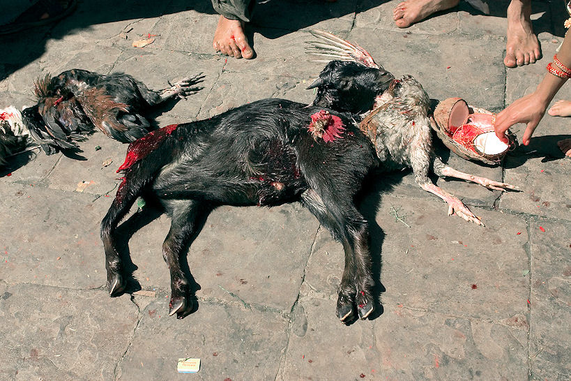
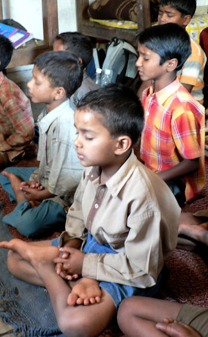

mailto:payer@payer.de
Zitierweise | cite as:
Payer, Alois <1944 - >: Sanskritkurs. -- Lösung der Übungen. -- Übungen Lektion 16 - 20. -- Fassung vom 2008-12-23. -- URL: http://www.payer.de/sanskritkurs/uebung16.htm
Erstmals hier publiziert: 2008-12-23
Überarbeitungen:
Anlass: Lehrveranstaltungen 1980 - 1984
©opyright: Dieser Text steht der Allgemeinheit zur Verfügung. Eine Verwertung in Publikationen, die über übliche Zitate hinausgeht, bedarf der ausdrücklichen Genehmigung des Verfassers
Dieser Text ist Teil der Abteilung Sanskrit von Tüpfli's Global Village Library
Falls Sie die diakritischen Zeichen nicht dargestellt bekommen, installieren Sie eine Schrift mit Diakritika wie z.B. Tahoma.
Die Devanāgarī-Zeichen sind in Unicode kodiert. Sie benötigen also eine Unicode-Devanāgarī-Schrift.
A) Wandeln sie folgende Ausdrücke in Tatpuruṣa um und übersetzen Sie sie:
१. देवस्य पुरुषः । देवपुरुषः
२. गुणवती ब्राह्मणी । गुणवद्ब्राह्मणी
३. सत्यवान्ब्राह्मणः । सत्यवद्ब्राह्मणः
४. पशुमन्तो जनाः । पशुमज्जनाः
५. सुखवान्वैश्यायाः पुत्रः ।
६. सुखवत्या वैश्यायाः पुत्रः । सुखवद्वैश्यापुत्रः
७. कवेरुक्त्याः सत्यम् । कव्युक्तिसत्यम्
८. शिवेन रक्षिता बाला । शिवरक्षितबाला
९. रामेण पीतं जलम् । रामपीतजलम्
१०. फलवांल्लाभः । फलवद्लाभः
११. इष्टाया देवतायाः पूजा । इष्टदेवतापूजा
१२. देवानां स्तुतिः । देवस्तुतिः
B) Lösen Sie in folgenden Sätzen alle Komposita in Sanskrit auf, bilden Sie so Sätze mit flektierten Nomina und übersetzen Sie:
१. पुण्यवद्वैश्यपुत्रो देवेन्द्रलोकं गच्छति । पुण्यवान्वैश्यस्य पुत्रो देवानामिन्द्रस्य लोकं गच्छति । पुण्यवतो वैश्यस्य पुत्रो देवानामिन्द्रस्य लोकं गच्छति । ... देवानामिन्द्राणां लोकं गच्छति । Der verdienstvolle Sohn eines Vaiśya kommt in den Himmel des Götterfürsten. Der Sohn eines verdienstvollen Vaiśya kommt in den Himmel des Götterfürsten. ... kommt in den Himmel der Götterfürsten.
२. पुण्यकरणं स्वर्गमार्गः । पुण्यस्य करणं स्वर्गस्य मार्गः । पुण्यानां करणं स्वर्गं मार्गः । Tun von Verdienstlichem ist der Weg zum Himmel.
३. न साधुः पशुवन्नरधेनुलोभः । न साधुः पशुवतो नरस्य धेनूनां लोभः । ... धेनोर्लोभः । न साधुः पशुवतां नराणां धेनूनां लोभः । Die Gier des an Vieh reichen Mannes nach Kühen / nach einer / der Kuh ist nicht gut. Die Gier von an Vieh reichen Männern nach Kühen ist nicht gut.
४. न पशुयज्ञैर्नराः स्वर्गं गच्छन्ति । धर्मयज्ञैस्तु स्वर्गसुखमाप्नुवन्ति । न पशूनां यज्ञैर्नराः स्वर्गं गच्छन्ति । धर्मस्य यज्ञैस्तु स्वर्गस्य / स्वर्गानां सुखमाप्नुवन्ति । Mit Tieropfern kommen Menschen nicht in den Himmel. Mit (unblutigen) Opfern der Gerechtigkeit aber erreichen sie himmlisches Glück.
५. द्विजदासा इति शूद्रा उच्यन्ते । द्विजानां दासा इति शूद्रा उच्यन्ते । Śūdras nennt man Sklaven der Zweimalgeborenen.
६. बालब्राह्मणपुत्राः सत्यवन्नरं शृण्वन्ति । बा्ला ब्राह्मणानां पुत्राः स्त्यवन्तं नरं शृण्वन्ति । Die jungen Brahmanenöhne hören auf den wahrhaftigen Mann.
७. बलवत्क्षत्रिया धनवच्छत्रुनगरं जयन्ति । बलवन्तः क्षत्रिया धनवतां शत्रूनां नगरं जयन्ति । बलवन्तः क्षत्रिया धनवच्छ्त्रूनां नगरं जयन्ति । Die mächtigen Kṣatriyas besiegen die Stadt der reichen Feinde. Die mächtigen Kṣatriyas besiegen die reiche Stadt der Feinde.
८. ऋष्युक्त्या सत्यमुच्यते । ऋषीणामुक्त्या सत्यमुच्यते । ऋषेरुक्त्या सत्यमुच्यते । Das Wort der vedischen Weisen sagt die Wahrheit. Das Wort des vedischen Weisen sagt die Wahrheit.
९. बलवद्योधा ब्राह्मणग्रामं गताः । बलवन्तो योधा ब्राह्मणानां / ब्राह्मणस्य ग्रामं गताः । Die starken Krieger sind ins Brahmanendorf / Dorf des Brahmanen gegangen.
१०. पुण्यवद्वैश्येष्टवेवतापूजां करोति । पुन्यवतो वैश्यस्येष्टाया देवतायाः पूजां करोति । पुन्यवती वैश्येष्ताया देवतायाः पूजां करोति । Er verehrt die persönliche Gottheit des verdienstvollen Vaiśya / der verdienstvollen Vaiśyafrau. Die verdienstvolle Vaiśyafrau verehrt ihre persönliche Gottheit.

Abb.: न पशुयज्ञैर्नराः स्वर्गं गच्छन्ति
Dakshinkali = दक्षिनाकाली, Nepal = नेपाल
[Bildquelle: Mathew Knott. --
http://www.flickr.com/photos/mknott/1394930047/. -- Zugriff am 2008-12-22.
--


 Creative
Commons Lizenz (Namensnennung, keine kommerzielle Nutzung, share alike)]
Creative
Commons Lizenz (Namensnennung, keine kommerzielle Nutzung, share alike)]
A) Bilden Sie alle bisher gelernten Kasus zu folgenden Wörtern als Beispiele für die bisher gelernten Deklinationsklassen.
Lernen Sie die Deklinationsmuster nach diesen Beispielen auswendig!!!
१. नर m.
| Singular | Plural | |
|---|---|---|
| 1. Nom. | नरस् | नरास् |
| 2. Akk. | नरम् | नरान् |
| 3. Instr. | नरेण | नरैस् |
| 6. Gen. | नरस्य | नराणाम् |
२. फल n.
| Singular | Plural | |
|---|---|---|
| 1. Nom. | फलम् | फलानि |
| 2. Akk. | फलम् | फलानि |
| 3. Instr. | फलेन | फलैस् |
| 6. Gen. | फलस्य | फलानाम् |
३. क्षत्रिया f.
| Singular | Plural | |
|---|---|---|
| 1. Nom. | क्षत्रिया | क्षत्रियास् |
| 2. Akk. | क्षत्रियाम् | क्षत्रियास् |
| 3. Instr. | क्षत्रियया | क्षत्रियाभिस् |
| 6. Gen. | क्षत्रियायास् | क्षत्रियाणाम् |
४. अरि m.
| Singular | Plural | |
|---|---|---|
| 1. Nom. | अरिस् | अरयस् |
| 2. Akk. | अरिम् | अरीन् |
| 3. Instr. | अरिणा | अरिभिस् |
| 6. Gen. | अरेस् | अरीणाम् |
५. मति f.
| Singular | Plural | |
|---|---|---|
| 1. Nom. | मतिस् | मतयस् |
| 2. Akk. | मतिम् | मतीस् |
| 3. Instr. | मत्या | मतिभिस् |
| 6. Gen. | मतेस् मत्यास् |
मतीनाम् |
६. गुरु m.
| Singular | Plural | |
|---|---|---|
| 1. Nom. | गुरुस् | गुरवस् |
| 2. Akk. | गुरुम् | गुरून् |
| 3. Instr. | गुरुणा | गुरुभिस् |
| 6. Gen. | गुरोस् | गुरूणाम् |
७. धेनु f.
| Singular | Plural | |
|---|---|---|
| 1. Nom. | धेनुस् | धेनवस् |
| 2. Akk. | धेनुम् | धेनूस् |
| 3. Instr. | धेन्वा | धेनुभिस् |
| 6. Gen. | धेनोस् धेन्वास् |
धेनूनाम् |
८. देवी f.
| Singular | Plural | |
|---|---|---|
| 1. Nom. | देवी | देव्यस् |
| 2. Akk. | देवीम् | देवीस् |
| 3. Instr. | देव्या | देवीभिस् |
| 6. Gen. | देव्यास् | देवीनाम् |
९. गुणवन्त् m.
| Singular | Plural | |
|---|---|---|
| 1. Nom. | गुणवान् | गुणवन्तस् |
| 2. Akk. | गुणवन्तम् | गुणवतस् |
| 3. Instr. | गुणवता | गुणवद्भिस् |
| 6. Gen. | गुणवतस् | गुण्वताम् |
गुणवन्त् n.
| Singular | Plural | |
|---|---|---|
| 1. Nom. | गुणवत् | गुणवन्ति |
| 2. Akk. | गूनवत् | गुणवन्ति |
| 3. Instr. | गुणवता | गुणवद्भिस् |
| 6. Gen. | गुणवतस् | गुण्वताम् |
गुणवती f. dekliniert wie देवी
१०. किम् m., n., f.
| Singular | Plural | |||||
|---|---|---|---|---|---|---|
| Maskulinum | Neutrum | Femininum | Maskulinum | Neutrum | Femininum | |
| 1. Nom. | कस् | किम् | का | के | कानि | कास् |
| 2. Akk. | कम् | किम् | काम् | कान् | कानि | कास् |
| 3. Instr. | केन | कया | कैस् | काभिस् | ||
| 6. Gen. | कस्य | कस्यास् | केषाम् | कासाम् | ||
११. तद् m., n., f.
| Singular | Plural | |||||
|---|---|---|---|---|---|---|
| Maskulinum | Neutrum | Femininum | Maskulinum | Neutrum | Femininum | |
| 1. Nom. | स सो सः |
तद् | सा | ते | तानि | तास् |
| 2. Akk. | तम् | तद् | ताम् | तान् | तानि | तास् |
| 3. Instr. | तेन | तया | तैस् | ताभिस् | ||
| 6. Gen. | तस्य | तस्यास् | तेषाम् | तासाम् | ||
१२. एतद् m., n., f.
| Singular | Plural | |||||
|---|---|---|---|---|---|---|
| Maskulinum | Neutrum | Femininum | Maskulinum | Neutrum | Femininum | |
| 1. Nom. | एष एषो एषः |
एतद् | एषा | एते | एतानि | एतास् |
| 2. Akk. | एतम् एनम् |
एतद् एनद् |
एताम् एनाम् |
एतान् एनान् |
एतानि एनानि |
एतास् एनास् |
| 3. Instr. | एतेन एनेन |
एतया एनया |
तैस् | ताभिस् | ||
| 6. Gen. | एतस्य | तस्यास् | तेषाम् | तासाम् | ||
१३. इदम् m., n., f.
| Singular | Plural | |||||
|---|---|---|---|---|---|---|
| Maskulinum | Neutrum | Femininum | Maskulinum | Neutrum | Femininum | |
| 1. Nom. | अयम् | इदम् | इयम् | इमे | इमानि | इमास् |
| 2. Akk. | इमम् एनम् |
इदम् एनद् |
इमाम् एनाम् |
इमान् एनान् |
इमानि एनानि |
इमास् एनास् |
| 3. Instr. | अनेन एनेन |
अनया एनया |
एभिस् | आभिस् | ||
| 6. Gen. | अस्य | अस्यास् | एषाम् | आसाम् | ||
B) Übersetzen Sie und lösen Sie alle Komposita in Sanskrit auf:
१. योगश्चित्तवृत्तिनिरोधः ॥योगसूत्र १.२॥ योगश्चित्तस्य वृत्तेर्निरोधः / वृत्तीनां निरोधः । Yoga ist das Stoppen der mentalen Tätigkeit / Tätigkeiten.
२. स्वधर्मो ब्राह्मणस्याध्ययनमध्यापनं यजनं याजनं दानं प्रतिग्रहश्च ॥५॥ Die spezifische Pflicht des Brahmanen ist: Vedastudium, Vedaunterricht, Opfern als Opferherr, Opfern in fremdem Auftrag, Geben an Brahmanen, Empfang von Gaben.
क्षत्रियस्याध्ययनं यजनं दानं शस्त्राजीवो भूतरक्षणं च ॥६॥ क्षत्रियस्याध्ययनं यजनं दानं शास्त्रेणाजीवो / शास्त्रस्याजीवो भूतानां रक्षणं च् । Die spezifische Pflicht eines Kṣatriya ist: Vedastudium, Opfern als Opferherr, Geben an Brahmanen, Lebensunterhalt durch das Schwert, Hüten der Lebewesen.
वैश्यस्याध्ययनं यजनं दानं कृषिपाशुपाल्ये वणिज्या च ॥७॥ वैश्यस्याध्ययनं यजनं दानं कृषिः पाशुपाल्यं च वणिज्या च । Die spezifische Pflicht eines Vaiśya ist: Vedastudium, Opfern als Opferherr, Geben an Brahmanen, Ackerbau und Viehhaltung, Handel.
शूद्रस्य द्विजातिशुश्रूषा वार्त्ता कारुकुशीलवकर्म च ॥८॥ शुड्रस्य द्विजातीनां शुश्रूषा वार्त्ता कारूणां कुशीलवानां च कर्म । Die spezifische Pflicht eines Śūdra ist gehorsamer Dienst an den Zweimalgeborenen, Wirtschaftstätigkeit und Tätigkeit als Handwerker und Schausteller.
सर्वेषामहिंसा सत्यं शौचमनसूयानृशंस्यं क्षमा च ॥१३॥ Pflicht aller ist: Gewaltlosigkeit, Wahrhaftigkeit, Reinheit, Nicht über sein Los murren, Freisein von Boshaftigkeit und geduldige Nachsicht.
(कौटिलीयार्थशास्त्र १.३.५-८, १३)
Erklärungen;
Satz 7: कृषिपाशुपाल्ये Dual, Nom. Akk.: Dvandva, das zwei "Sachen" bezeichnet
Satz 8: कर्म Nom., Akk. sg. Neutrum zu कर्मन् "Tat"
Satz 13: सर्वेषाम् Gen. pl. mask. zu सर्व "jeder, alle" (Pronomen, dekliniert nicht wie deva)
३. आन्वीक्षिकीत्रयीवार्त्तानां योगक्षेमसाधनो दण्डः, तस्य नीतिर्दण्डनीतिः ॥ कौटिलीयार्थशास्त्र १.४.३ ॥ आन्वीक्षिक्याः त्रय्याः वार्त्ताया योगस्य क्षेमस्य च साधनो दण्डः, तस्य नीतिर्दण्डनीतिः । Der Prügel bewirkt Erwerb und sicheren Besitz von Philosophie, Vedististik und Ökonomie. Die Führung des Prügels ist Politik.

Abb.: योगश्चित्तवृत्तिनिरोधः
[Bildquelle: Roshnii. --
http://www.flickr.com/photos/roshnii/110087684/. -- Zugriff am 2008-12-22.
--


 Creative
Commons Lizenz (Namensnennung, keine kommerzielle Nutzung, share alike)]
Creative
Commons Lizenz (Namensnennung, keine kommerzielle Nutzung, share alike)]
A) Setzen Sie in folgenden Sätzen das Verb ein und übersetzen Sie:
१. ब्राह्मनो ऽनृतं न ... (ब्रू । वच् । वद्) । ब्रवीति । वक्ति । वदति । Ein Brahmane spricht keine Unwahrheit.
२. क्षत्रियो जनान् ... (पा । रक्ष्) । पाति । रक्षति । Ein Kṣatriya hütet die Leute.
३. बलवद्योधो द्विजारीन् ... (जि । हन् । युध्) । द्विजारीञ्जयति । द्विजारीन्हन्ति । युध्यते । Der mächtige Kämpfer besiegt / tötet / bekämpft die Feinde der Zweimalgeborenen.
४. ब्राह्मणकविर्लोकेश्वरम् ... (स्तु । यज्) । स्तौति । स्तुते । यजते । यजति । Der brahmanische Dichter preist den HERRN der Welt. ... opfert als Opferherr / in fremdem Auftrag dem HERRN der Welt
५. अग्निर्यज्ञान्नम् ... (अद् । दह्) । अत्ति । दहति । Das Feuer verzehrt / verbrennt die Speise
६. बालवैश्यो धेनुम् ... (दुह् । रक्ष् । पा) । दोग्धि । दुग्धे । रक्षति । पाति । Der junge Vaiṣya melkt / hütet die Kuh.
७. द्विजदासो मृगमार्गेण ब्राह्मणग्रामम् ... (गम् । इ । पद्) । गच्छति । एति । पद्यते । Ein Diener der Zweimalgeborenen geht auf dem Wildwechsel ind Brahmanendorf.
८. द्विजदासः शूद्रस् ... (अस् २ । भू) । द्विजदासः शूद्रो ऽस्ति । ... शूद्रो भवति । Ein Śūdra ist Knecht der Zweimalgeborenen.
९. बालब्राह्मणी ... (रुद् । आस् । मृ) । रोदिति । बालब्राह्मण्याते । म्रियते । Die kleine Brahmanin weint / sitzt / stirbt.
१०. साधुजनो ऽधर्मम् ... (द्विष् । न कृ) । द्वेष्टि । द्विष्टे । न करोति । न कुरुते ।Eine Gute Person hasst das Unrecht. ... tut kein Unrecht.
B) Setzen Sie in den in A) gebildeten Sätzen Agens und Verb in den Plural
१. ब्राह्मनो ऽनृतं न ... (ब्रू । वच् । वद्) । ब्राह्मणा अनृतण् न ब्रुवन्ति । plur. von वच् kommt nicht vor । वदन्ति
२. क्षत्रियो जनान् ... (पा । रक्ष्) । क्षत्रिया जनान्पान्ति । रक्षन्ति ।
३. बलवद्योधो द्विजारीन् ... (जि । हन् । युध्) । बलवद्योधा द्विजारीञ्जयन्ति । ... द्विजारीन्घन्ति । युध्यन्ते ।
४. ब्राह्मणकविर्लोकेश्वरम् ... (स्तु । यज्) । ब्राह्मणकवयो लोकेश्वरं स्तुवन्ति । स्तुवते । यजन्ति । यजन्ते ।
५. अग्निर्यज्ञान्नम् ... (अद् । दह्) । अग्नयो यज्ञान्नमदन्ति । दहन्ति ।
६. बालवैश्यो धेनुम् ... (दुह् । रक्ष् । पा) । बालवैश्या धेनुं दुहन्ति । दुहते । रक्षन्ति । पान्ति ।
७. द्विजदासो मृगमार्गेण ब्राह्मणग्रामम् ... (गम् । इ । पद्) । द्विजदासा मृगमार्गेण ब्राह्मणग्रामं गच्छन्ति । यन्ति । पद्यन्ते ।
८. द्विजदासः शूद्रस् ... (अस् २ । भू) । द्विजदासाः शूद्राः सन्ति । ... शूद्रा भवन्ति ।
९. बालब्राह्मणी ... (रुद् । आस् । मृ) । बालब्राह्मण्या रुदन्ति । बालब्राह्मण्य आसते । बालब्राह्मण्यो म्रियन्ते ।
१०. साधुजनो ऽधर्मम् ... (द्विष् । न कृ) । साधुजनो ऽधर्मं द्विषन्ति । द्विषते । न कुर्वन्ति । न कुर्वते ।
Abb.: बालब्राह्मणी रोदिति
विद्यारम्भः
[Bildquelle: ToreaJade. --
http://www.flickr.com/photos/toreajade/52085380/. -- Zugriff am 2008-12-22.
--


 Creative
Commons Lizenz (Namensnennung, keine kommerzielle Nutzung, share alike)]
Creative
Commons Lizenz (Namensnennung, keine kommerzielle Nutzung, share alike)]
Übersetzen Sie folgende Verbformen und geben Sie die dazugehörige Wurzel an:
१. अदन्ति अद् 2P sie essen
२. सन्ति अस् 2P sie sind
३. आसते आस् 2Ā sie sitzen
४. यन्ति इ 2P sie gehen
५. इच्छति इष् 6P er wünscht
६. कुर्वते कृ 8U sie tun im eigenen Interesse
७. गच्छन्ति गम् 1P sie gehen
८. जायते जन् 4Ā er entsteht
९. जयति जि 1P er siegt
१०. तनोति तन् 8U er spannt auf
११. दहति दह् 1P er verbrennt
१२. दोग्धि दुह् 2U er melkt
१३. पश्यति दृश् 4P er sieht
१४. द्विष्टे द्विष् 2U er hasst
१५. नयन्ति नी 1U sie führen
१६. नृत्यति नृत् 4P er tanzt
१७. पद्यन्ते पद् 4Ā sie schreiten
१८. पिबति पा 1P er trinkt
१९. पान्ति पा 2P sie hüten
२०. पृच्छति प्रच्छ् 6P er fragt
२१. बुध्यन्ते बुध् 4Ā sie erwachen
२२. ब्रवीति ब्रू 2U er spricht
२३. भवन्ति भू 1P sie werden
२४. मन्यते मन् 4Ā er meint
२५. मुञ्चन्ति मुच् 6U sie befreien
२६. म्रियन्ते मृ 4Ā sie sterben
२७. यजते यज् 1U er opfert als Opferherr
२८. युध्यन्ते युध् 4Ā sie kämpfen
२९. रक्षति रक्ष् 1P er hütet
३०. रोदिति रुद् 2P er heult
३१. लभते लभ् 1Ā er erhält
३२. वक्ति वच् 2P er spricht
३३. वदति वद् 1P er spricht
३४. शृणोति श्रु 5P er hört
३५. स्तौति स्तु 2U er lobt
३६. स्मरति स्मृ 1P er vergegenwärtigt
३७. हन्ति हन् 2P er erschlägt
३८. अश्नुवते अश् 5Ā sie erreichen
३९. कुप्यते कुप् 4P es wird gezürnt
४० कर्षन्ति कृष् 6U sie ziehen
४१. उद्यते वद् 1P es wird gesagt
४२. सहन्ते सह् 1Ā sie ertragen
४३. सिच्यन्ते सिच् 6U sie werden beträufelt
४४. आप्नोति आप् 5P er erreicht
४५. जीव्यते जीव् 1P es wird gelebt
४६. दिश्यन्न्ते दिश् 6U sie werden gezeigt
Abb.: शृणोति
Bangalore
[Bildquelle: mattlogelin. --
http://www.flickr.com/photos/mattlogelin/401785290/. -- Zugriff am
2008-12-22. --

 Creative
Commons Lizenz (Namensnennung, keine kommerzielle Nutzung)]
Creative
Commons Lizenz (Namensnennung, keine kommerzielle Nutzung)]
A) Übersetzen Sie das सुभाषित am Beginn der Lektion.
नास्ति कामसमो व्याधिर्
नास्ति मोहसमो रिपुः ।
नास्ति क्रोधसमो वह्निर्
नास्ति ज्ञानसमं सुखम् ॥
Es gibt keine Krankheit wie die Liebe,
Es gibt keinen Betrüger und Feind wie die Verblendung,
Es gibt kein Feuer wie den Zorn,
Es gibt kein Glück wie die Erkenntnis.
B) Übersetzen Sie folgende Tatpuruṣa:
१. सुकर ३ leicht zu tun
२. सुकुल n. gute Familie
३. सुकृति f. gute Tat
४. अकरण n. Nichttun
५. दुरिष्ट n. böser Wunsch
६. दुरिष्टि f. fehlerhaftes Opfer
७. सुखादित 3 gut gekaut
८. दुष्कर 3 schwer zu tun
९. दुर्जय 3 schwer zu besiegen
१०. सुगत m. gut (durch die Wiedergeburten) Gegangener (= Buddha)
११. सुजन m. guter Mensch
१२. दुरुक्ति f. harte Rede
१३. दुरुपदेश m. schlechte Anweisung
१४. सुजात 3 wohlgeboren
१५. सुगुरु 3 sehr schwer
१६. अनाप्त 3 ungeeignet
१७. अनीति f. ungehöriges Benehmen
१८. अनीश्वरत्व n. nicht-HERR-sein
१९. सुदुःख n. großes Leid
२०. दुर्जन m. böser Mensch
२१. दुर्दग्ध 3 schlecht verbrannt
२२. अतिकृत 3 übertrieben
२३. सुपुत्र m. guter Sohn
२४. सुबुद्धि f. gute Einsicht
२५. दुष्पुत्र m. schlechter Sohn
२६. दुष्प्रणीत 3 schlecht ausgeführt
२७. सुमति f. Freundlichkeit
२८. दुर्लभ 3 schwer zu bekommen
२९. दुर्वच 3 schwer zu sagen
३०. दुर्वचन n. schlechte Rede
३१. अमृत n. Unsterblichkeit, Unsterblichkeitsspeise, Unsterblichkeitstrank
Abb.: नास्ति कामसमो
व्याधिः
Taj Mahal =
تاج محل
[Bildquelle: US-Air Force, Tech. Sgt. Keith Brown / Wikipedia. Public domain]
Bitte keine Hilfsmittel benutzen!
A) Lösen Sie folgende Komposita in Sanskrit auf und geben Sie Übersetzungsvorschläge:
१. अन्तगत 3 । अन्तं गतः । zu Ende gegangen, Grammatik: auslautend
२. क्षमाकर 3। क्षेमायाः करः । jemand der Geduldig ist, geduldiges Tun
३. क्षेमेन्द्र m.। क्षेमस्येन्द्रः । Herr der Ruhe / des Wohlergehens / Friedens
४. शस्त्रकोपनिरोध m. । शस्त्राणां कोपस्य निरोधः । शस्त्रस्य । शस्त्रेण । Stoppen des Zorns mit dem Schwert = Stoppen des Kampfes
५. सिंहसंहनन n.। सिंहस्य संहननम् । सिंहानां संहननम्। सिंहेन संहननम् । सिंहैः संहननम् । Töten eines / mehrerer Löwen, Töten durch einen / mehrere Löwen
६. अरिसिंह m. । सिंह इव अरिः । अरिरेव सिंहः । löwengleicher Feind
७. आहारनिद्राभय n. । आहारो निद्रा भयं च । Essen, Schlafen und Furcht
८. मृतिसाधनी f. । मृतेः साधनी । मृत्याः । मृतिम् । Tod bewirkende
९. कुलोपदेश m. । कुलस्योपदेशः । Familienname (Hinweis auf die Familie)
B) Übersetzen Sie unter Verwendung von Verben der 2. Präsensklasse:
1. Der Brahmane preist die Göttinnen. ब्राह्मणो देवीः स्तौति । स्तवीति ।
2. Die Helden gehen auf dem schwer begehbaren Weg ins Dorf der Arier. शूरा दुर्गमेण मार्गेणार्यग्रामं यन्ति ।
3. Die Hausmagd melkt die Kühe. गृहदासी धेनूर्दोग्धि
4. Die Feinde der Arier erschlagen die mächtigen Kṣatriyas. आर्यारयो बलवत्क्षत्रियान्घन्ति । आर्यशत्रवो ।
5. Ein Gespenst isst keine Früchte. भूतं फलानि नात्ति ।
6. So spricht der, der [den Weg durch die Wiedergeburten] gut gegangen ist zum Jünger. एवं सुगतः श्रावकं वक्ति । ब्रवीति । ब्रूते ।
C) Geben Sie in Sanskrit die Definition von Yoga auf zwei Weisen: einmal unter Verwendung eines Kompositums, einmal indem Sie das Kompositum auflösen.
योगश्चित्तवृत्तिनिरोधः । योगश्चित्तस्य वृत्तेर्निरोधः । वृत्तीनां निरोधः ।
D) Übersetzen Sie:
(धर्मः) सर्वेषामाहिंसा सत्यं शौचमनसूयानृशंस्यं क्षमा च ॥
Pflicht aller ist: Gewaltlosigkeit, Wahrhaftigkeit, Reinheit, Nicht über sein Los murren, Freisein von Boshaftigkeit und geduldige Nachsicht.
Abb.: दुर्गमो मार्गः
Uttarakhand =
उत्तराखण्ड
[Bildquelle: Peter Davis. --
http://www.flickr.com/photos/pediddle/327777627/. -- Zugriff am 2008-12-22.
--


 Creative
Commons Lizenz (Namensnennung, keine kommerzielle Nutzung, keine Bearbeitung)]
Creative
Commons Lizenz (Namensnennung, keine kommerzielle Nutzung, keine Bearbeitung)]
Übersetzen Sie ins Sanskrit:
1. Die Vaiśyafrau, deren Sohn gestorben ist, weint. यस्या वैश्यायाः पुत्रो मृतः सा रोदिति । यस्या वैश्यायाः पुत्रो मृतो रोदिति ।
2. Rāma opfert der Gottheit, die ihn behütet. या देवता रामं रक्षति तां यजते ।
3. Der Dichter preist den Kṣatriya, dessen Reichtum er begehrt. यस्य क्षत्रियस्य धनं लुभ्यति तं कविः सतुति ।
4. Feuer verbrennt das Haus des Mannes, der Agni nicht mit einem Opfer verehrt. यो नरो ऽग्निं न यजते तस्य गृहमग्निर्दहति ।
5. Der tigergleiche Mann erschlägt die Kṣatriya-Krieger, die Rāma besieget haben (Passiv). यैः क्षत्रिययोधै रामो जितस्तान्पुरुषव्याघ्रो हन्ति ॥
Übersetzen Sie:
येन येन च वातेन
वारिदो वारि मुञ्चति ।
तेन तेन च वातेन
छत्रं वहति पण्डितः ॥१॥
Mit welchem Wind die Wolke Wasser lässt, mit dem Wind bewegt ein Gelehrter seinen Schirm.
Entspricht den deutschen Sprichwörtern:
Hinter dem Winde schifft der Kluge.
Je nach dem Winde dreht sich die Fahne.
Jeder fängt den Wind in seinem Segel.
यो धर्ममर्थं कामं च
यथाकालं निषेवते ।
धर्मार्थकामसंयोगं
सो ऽमुत्रेह च
विन्दति ॥२॥
Wer zur rechten Zeit Religion, gewinnbringender Tätigkeit bzw. Liebe frönt, der findet auf dieser Welt und im Jenseits Gemeinschaft mit Religion, Gewinn und Liebe.
सा भार्या या प्रियं ब्रूते
स पुत्रो यस्तु जीवति ।
स जीवति गुणो यस्य
धर्मो यस्य स जीवति ॥३॥
Das ist seine Gattin, die Liebes spricht,
Das ist aber ein Sohn, der lebt,
Der lebt, der Tugend hat,
Wer Religion, Recht und Sitte hat, der lebt.
यस्यार्थास्तस्य मित्राणि
यस्यार्थास्तस्य बान्धवाः ।
यस्यार्थाः स पुमांल्लोके
यस्यार्थाः स हि पण्डितः ॥४॥
Wer Wohlstand hat, der hat Freunde,
Wer Wohlstand hat, der hat Verwandte,
Wer Wohlstand hat, der ist in der Welt ein Mann,
Wer nämlich Wohlstand hat, der ist ein Gelehrter.
Abb.: यस्यार्थास्तस्य मित्राणि
यस्यार्थास्तस्य बान्धवाः ।
यस्यार्थाः स पुमांल्लोके
यस्यार्थाः स हि पण्डितः ॥
"An 1895 group photograph of the eleven year old Krishnaraja Wadiyar IV (ನಾಲ್ವಡಿ
ಕೃಷ್ಣರಾಜ ಒಡೆಯರು), ruler of the princely state of Mysore (ಮೈಸೂರು ಸಾಮ್ರಾಜ್ಯ) in
South India, with his brothers and sisters."
[Bildquelle: Wikipedia. Public domain]
Lösen Sie die folgenden Komposita als Bahuvrīhi und/oder Dvandva und/oder Tatpuruṣa auf alle Ihnen als möglich erscheinenden Arten in Sanskrit auf (Ausnahme: Komposita mit adverbiellem Vorderglied). Übersetzen Sie diese verschieden aufgelösten Komposita ins Deutsche, geben Sie Geschlecht, Fall und Zahl des Gesamtkompositums an.
Abb.: सम्पन्नरूपा रूपसम्पन्ना
Sigiriya = සීගිරිය, Sri Lanka, 5. Jhdt
[Bildquelle: Dschen Reinecke / Wikipedia, GNU FDLicense]
A) Übersetzen Sie und lösen Sie die Komposita in Sanskrit auf:
इन्द्रशत्र्वनार्या देवेन्द्रेण जीयन्ते ॥१॥ इन्द्रः शत्रुर्येषां ते ऽनार्या देवानामिन्द्रेण जीयन्ते । इन्द्रस्य शत्रव एवानार्या ... ॥ Der Götterfürst besiegt die Nichtarier, die Feinde Indras sind / deren Feind Indra ist.
शूरबलक्षत्रिययोधः शूरपुत्रमिच्छति ॥२॥ शूरस्य बलं यस्य स क्षत्रिय एव योधः शूरमेव पुत्रमि्च्छति ॥ Der Kṣatriyakrieger mit der Kraft eines Helden wünscht sich einen Heldensohn.
सुदुर्गममार्गेण स्वर्गं गम्यते । सुगमस्तु नरकमार्गः ॥३॥ सुदुर्गमेण मार्गेण स्वर्गं गम्यते । सुगमस्तु नरकस्य मार्गः ॥ Auf einem sehr beschwerlichen Weg kommt man in einen Himmel. Der Weg zu einer Hölle ist aber einfach.
मृतपुत्रब्राह्मणी रोदिति ॥४॥ मृतः पुत्रो यस्याः सा ब्राह्मणी रोदिति ॥ Die Brahmanin, deren Sohn gestorben ist, weint.
वीतमोहब्राह्मणः सम्पन्नरूपामपि शूद्रां न लुभ्यति ॥५॥ वीतो मोहो यस्य स ब्राह्मणः सम्पन्नं रूपं यस्यास्तामपि शूद्रां न लुभ्यति ॥ Ein von Verblendung freier Brahmane begehrt keine Śūdrafrau, auch sie einen vollkommenen Körper hat.
सुनीतिपुत्रः प्राप्तमतिदर्शनसाधुं गच्छति ॥६॥ शोभना नीतिर्यस्य स पुत्रः प्राप्तं मतेर्दर्शनं येन तं साधुं गच्छति ॥ Der artige Sohn geht zum Heiligen, der die Fähigkeit, Gedanken zu lesen, erworben hat.
प्राप्तप्रभावक्षत्रिया दृष्टमात्राञ्छत्रून्घ्नन्ति ॥७॥ प्राप्तः प्रभावो यैस्ते क्षत्रिया दृष्टं मात्रं येषां ताञ्छत्रून्घन्ति ॥ Die zur Macht gekommenen Kṣatriyas töten die Feinde sobald sie sie erblickt haben.
जितशत्रुयोधाः शत्रुजितान्मुञ्चन्ति ॥८॥ जितः शत्रुर्यैस्ते योधाः शत्रुणा जितान्मुञ्चन्ति । जिताः शत्रवो यैस्त्ते योधाः शत्रुभिर्जितान्मुञ्चन्ति ॥ Die Krieger, die den Feind / die Feinde besiegt hatten, befreien die vom Feind / von den Feinden Besiegten.
कृतोपनयनबालः शिवादिदेवपूजां करोति ॥९॥ कृतमुपनयनं यय्स स बालः शिव आदिर्येषां तेषां देवानां पुजां करोति ॥ Der in den Veda initiierte Knabe verehrt Śiva und die anderen Götter.
बुद्धगता दुःखादिसत्यानि शृण्वन्ति ॥१०॥ बुद्धं गता दुःखमादिर्येषां तानि सत्यानि शृण्वन्ति ॥ Die zu Buddha Gegangenen hören die Wahrheit vom Leiden und die anderen (edlen) Wahrheiten.
B) Übersetzen Sie unter Verwendung von Komposita ins Sanskrit:
1. Ein Kṣatriya, der den Stock nicht in der Hand hält, behütet das Volk nicht. अदण्डहस्तः क्षत्रियो न जनान्पाति । जनान्रक्षति ।
2. Kālidāsa und die übrigen Dichter sind die Lehrer im Sanskrit. संस्कृतगुरवः कालिदासादिक्वयः ।
3. Ein Kṣatriya hat seinen Lebensunterhalt durch Waffen. शस्त्राजीवः क्षत्रियः ।
4. Auch Śūdrafrauen haben als Dharma Gewaltlosigkeit, Wahrheit, Reinheit, Nicht-Murren, Nicht-Boshaftigkeit und Langmut. अहिंसासत्यशौचानसूयानृशंस्यक्षमाधर्माः शूद्रा अपि ॥
Abb.: शस्त्राजीवः क्षत्रियः
Visakhapatnam = విశాఖపట్టణం, Andhra
Pradesh = ఆంధ్ర ప్రదేశ్,
18. Jhdt.
[Bildquelle: unforth.
--
http://www.flickr.com/photos/unforth/2687570872/. -- Zugriff am 2008-12-23.
--

 Creative
Commons Lizenz (Namensnennung, share alike)]
Creative
Commons Lizenz (Namensnennung, share alike)]
मैत्रीकरुणामुदितोपेक्षाणां सुखदुःखपुण्यापुण्यविषयाणां भावनतश्चित्तप्रसादनम् ॥योगसूत्र १.३३॥
Die Abklärung des Geistes geschieht durch die Entfaltung von freundlichem Wohlwollen, Mitgefühl, Mitfreude und Gleichmut, die Glück und Leid, Verdienstvolles und Nicht-Verdienstvolles als Objekt haben.
तपःस्वाध्यायेश्वरप्रणिधानानि क्रियायोगः ॥योगसूत्र
२.१॥
समाधिभावनार्थः क्लेशतनूकरणार्थश्च ॥योगसूत्र २.२॥
Yoga der Tat ist Askese, Vedastudium und
aufmerksamer Dienst am HERRN.
Er hat als Ziel die Entfaltung der Sammlung und die Schwächung der "Qualen"
Erklärung: die fünf "Qualen" (क्लेश) sind:
अविद्यास्मितारागद्वेषाभ्निवेशाः ॥योगसूत्र २.३॥ Unwissenheit, Ichbezogenheit, Gier, Hass und Anhänglichkeit an den Leib.
त्रिविधदुःखात्यन्तनिवृत्तिरत्यन्तपुरुषार्थः ॥सांख्यसूत्र १.१॥ (Zum Sāṃkhyasystem siehe Basham, Wonder S. 324f.)
Das höchste Ziel des Menschen ist, dass das dreifache Leid völlig verschwindet.
Erklärung: "dreifache Leid": das aus einem selbst entsteht, das von den Objekten herrührt, das von den Göttern kommt
Definition er Erlösung nach dem Nyāyasystem:
बाधनालक्षणं दुःखम् ॥न्यायसूत्र १.२१॥
तदत्यन्तविमोक्षो ऽपवर्गः ॥न्यायसूत्र १.२२॥
Leid ist durch Bedrängnis gekennzeichnet. Erlösung ist die völlige Befreiung davon.
Ausspruch der Materialisten nach dem सर्वदर्शनसंग्रह :
न स्वर्गो नापवर्गो वा नैवात्मा पारलौकिकः ।
नैव वर्णाश्रमादीनां क्रियाश्च फलदायिकाः ॥
Es gibt keinen Himmel, keine Erlösung, keine überweltliche Seele, es gibt auch keine fruchtbringenden Rituale und Tätigkeiten für Stände und Lebensstadien.
Ein सुभाषितम् :
देवानां करदा विप्रा
विप्राणां करदा नृपाः ।
नृपाणां करदा लोका
लोकानां करदा मही ॥
Brahmanen geben den Göttern Abgaben,
Den Brahmanen geben Könige Abgaben,
Den Königen geben die Leute Abgaben,
Den Leuten gibt die Erde Abgaben.
Über Besitzverhältnisse:
भार्या पुत्रश्च दासश्च
त्रय एवाधनाः स्मृताः ।
यत्ते समधिगच्छन्ति
यस्य ते तस्य तद्धनम् ॥मनुस्मृति ८.४१६॥
Gattin, Sohn und Leibeigener, diese drei sind der Überlieferung nach besitzlos. Was sie erwerben, ist besitz dessen, dem sie gehören.
Ein सुभाषितम् über weibliche Schönheit:
तनुमध्यं पृथुश्रोणि
रक्तौष्ठमसितेक्षणम् ।
नतनाभि वपुः स्त्रीणां
कं न हन्त्युन्नतस्तनम् ॥
In der Mitte schlank, an den Hüften breit, mit roten Lippen, schwarzen Augen, mit einem gebogenem Nabel und prallen Brüsten, welchen Mann erschlägt eine solch schöner Frauenkörper nicht?
Noch ein सुभाषितम् :
सन्ति पुत्राः सुबहवो
दरिद्राणामनिच्छताम् ।
नास्ति पुत्रः समृद्धानां
विचित्रं विधिचेष्टितम् ॥
Arme, die sie nicht wünschen, haben sehr viele Söhne, Reiche haben keinen einzigen Sohn. Seltsam ist der Lauf der Schöpfung.
Abb.: सन्ति पुत्राः सुबहवो
दरिद्राणाम्
[Bildquelle: Sumanth K. Garakarajula. --
http://www.flickr.com/photos/photocracy1/2864368068/. -- Zugriff am
2008-12-23. --

 Creative
Commons Lizenz (Namensnennung, keine kommerzielle Nutzung)]
Creative
Commons Lizenz (Namensnennung, keine kommerzielle Nutzung)]
Lösung zu den Übungen Lektion 21 - 25